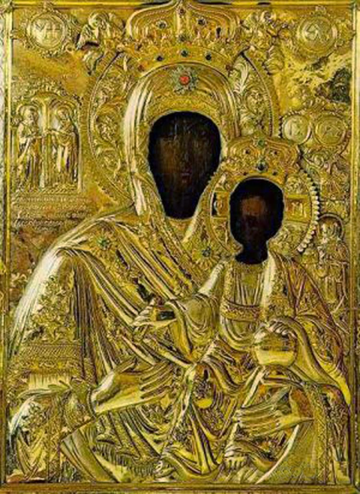

Έζησε, κατά πάσα πιθανότητα, τον 12ο μ.Χ. αιώνα, σύμφωνα με παραλληλισμούς χειρογράφων που αναφέρονται σε μαθητές (π.χ. Γρηγόριος Κουκουζέλης), μεταγενέστερους (π.χ. Γεώργιος Κοντοπετρής κ.α.) και προγενέστερους (π.χ. Ιωάννης Πλουσιαδηνός) αυτού1.
Για την καταγωγή και τη ζωή του δεν υπάρχουν εξακριβωμένες πληροφορίες, πέρα από αυτές της εκκλησιαστικής παράδοσης2. Σύμφωνα με την παράδοση, γεννήθηκε στο Δυρράχιο της Ιλλυρίας και ύστερα από ενέργειες της μητέρας του, μένοντας ορφανός από πατέρα, σπούδασε στην Αυτοκρατορική Σχολή της Κωνσταντινούπολης. Εκεί ονομάστηκε Κουκκουζέλης από τους συμμαθητές του, όταν σε ερώτηση που του έκαναν περί του τι τρώει αυτός απάντησε, εξαιτίας της φτώχειας του, «κουκκία και ζέλια», δηλαδή κουκιά και μπιζέλια.
Ο Ιωάννης έχοντας κλίση, παιδιόθεν, όχι μόνο για τα γράμματα αλλά και για την ιερά μουσική, διαπρέποντας δε και για το «ηδυμελίφθογγον» της φωνής του, προσελήφθη εις τη Βασιλική Μουσική Σχολή και εκεί ελκύοντας την αγάπη των μεγιστάνων της εποχής και την εύνοια του Αυτοκράτορα, διορίζεται Αρχιμουσικός των Αυτοκρατορικών Ψαλτών. Γνωρίζοντας όμως την επιθυμία του Αυτοκράτορα να τον συγγενέψει με κάποιον από τους μεγιστάνες, προνοώντας για την ψυχή του, αποφασίζει να εγκαταλείψει το παλάτι. Απατά τον Αυτοκράτορα και μεταβαίνει στη γενέτειρά του για να λάβει, δήθεν, μητρική συγκατάθεση για το γενόμενο γάμο. Εκεί συνεννοήθηκε με φίλους του να πουν στη μητέρα του ψέμματα ότι είχε πεθάνει. Μάλιστα, καθώς βρισκόταν κρυφά μέσα στο σπίτι κι άκουγε τη μητέρα του να κλαίει και να οδύρεται για το δήθεν θάνατό του, μέλισε τη θρηνωδία (μοιρολόι) με τίτλο «Βουλγάρα».
Μετά από αυτά, επανήλθε ο Ιωάννης στην Κωνσταντινούπολη, κι εκεί μαθαίνοντας για το βίο των ερημιτών του Άθωνα, μεταβαίνει στο Άγιο Όρος, στη μονή Μεγίστης Λαύρας, φέροντας μαζί του τη ράβδο και το χιτώνα του. Εκεί, όταν ρωτήθηκε από το θυρωρό ποιος ήταν, απάντησε ότι ήταν ποιμένας προβάτων κι ότι επιθυμεί το μοναχικό σχήμα κι όταν παρατήρησε ο θυρωρός ότι ήταν νέος, ο Ιωάννης απάντησε ταπεινά το του Ιερεμία: «Αγαθόν ανδρί, όταν άρη ζυγόν εν τη νεότητι αυτού» (Θρην. Γ’ 27).

Η κεντρική πύλη της Ι.Μ. Μεγίστης Λαύρας στην οποία έγινε ο διάλογος μεταξύ του Αγίου Ιωάννου και του θυρωρού
Στη Λαύρα κείρεται μοναχός και διορίζεται ποιμήν των τράγων της μονής διατηρώντας την ανωνυμία του. Όμως μία ημέρα, ενώ καθόταν και φύλαγε το ποίμνιό του, άρχισε να ψάλλει. Κάποιος ερημίτης άκουσε τη γλυκύτατη φωνή του και με έκπληξη παρατήρησε ότι ακόμα και οι τράγοι ατένιζαν προς τον ποιμένα τους για να ακούσουν την μελωδική φωνή του. Ανήγγειλε τότε αυτά στον Ηγούμενο της Λαύρας και όταν κλήθηκε ο Ιωάννης από τον Ηγούμενο, αναγνωρίζεται και επιτιμάται, επειδή δε δήλωσε εγκαίρως ότι ήταν ο αγαπημένος καλλίφωνος μουσικός του Αυτοκράτορα. Ο Ηγούμενος τότε ανήγγειλε το περιστατικό στον Αυτοκράτορα, παίρνοντας τη συγκατάθεση του να μην ενοχλήσει τον δραπετεύσαντα από το παλάτι αγαπητό μουσικό του3.

Η σπηλιά του Αγίου Ιωάννου στα περίχωρα της Ι.Μ.Μεγίστης Λαύρας
Έκτοτε, ο Ιωάννης ζούσε εντός του κτισθέντος κελλιού του πλησίον της Λαύρας σε ησυχία, τις δε Κυριακές και εορτές έψαλλε στο ναό με κατάνυξη μαζί με τους άλλους ιεροψάλτες. Οι κόποι του και ο ζήλος προς τη μελωδία ανταμείφθηκαν με ουράνια επίσκεψη. Κατά την παράδοση, στην παννυχίδα του Σαββάτου της Ε’ Εβδομάδος των Νηστειών, που ψάλλεται ο Ακάθιστος Ύμνος, μετά το τέλος του κανόνος, ο Ιωάννης, κουρασμένος από την αγρυπνία, αποκοιμήθηκε στο στασίδι και του παρουσιάσθηκε σε ενύπνιο η Θεομήτωρ και του είπε «Χαίροις Ιωάννη· ψάλλε μοι, και ου μη σε εγκαταλίπω» και του έδωσε χρυσό νόμισμα. Όταν ξύπνησε, βρήκε στο χέρι του το δώρο της Θεοτόκου. Μετά από αυτό, ο Ιωάννης υπεραύξησε τον ζήλο για την ψαλμωδία κι έψαλλε στο ναό κάθε μέρα και όταν ασθένησε στο πόδι του, εξαιτίας της συνεχούς στάσεως κατά τη διάρκεια της ψαλμωδίας και τους ασκητικούς του αγώνες, θεραπεύτηκε από τη Θεοτόκο, η οποία του είπε «Έσο από του νυν υγιής»4. Το χρυσό νόμισμα του Ιωάννου έκανε πολλά θαύματα και έκτοτε τοποθετήθηκε στη θαυματουργή εικόνα της Παναγίας της Κουκουζέλισσας, η οποία σήμερα βρίσκεται τοποθετημένη σε ξύλινο θρόνο, μέσα στο ομώνυμο παρεκκλήσι της Μονής. Σήμερα το μισό αυτού βρίσκεται στην εικόνα της Παναγίας και το άλλο μισό, αιτήθηκε λόγω ευλάβειας και στάλθηκε στη Ρωσία5.
Η θαυματουργή εικόνα της Παναγίας της Κουκουζέλισσας (21 Νοεμβρίου)
Ο Ιωάννης θαυμαζόταν για την τέχνη και γλυκύτητα της φωνής του και την ωραία του μορφή. Με θεάρεστη πολιτεία συνέχισε τον βίο του. Προγνώρισε το τέλος του και ζήτησε να τον θάψουν στο κελλί των Αρχαγγέλων, όπου ασκήτευε6. Κατατάχθηκε στο χορό των Αγίων της Εκκλησίας, αφήνοντας πλούσιο συγγραφικό έργο. Η μνήμη του εορτάζεται την 1η Οκτωβρίου. Η Κάρα και άλλα Λείψανα του Αγίου βρίσκονται στη Μονή Μεγίστης Λαύρας Αγίου Όρους. Απότμημα του Ιερού Λειψάνου του Αγίου βρίσκεται στη Μονή Αγίας Άννης Λυγαριάς Λαμίας.